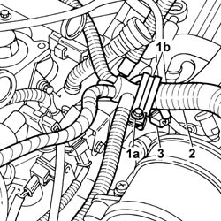
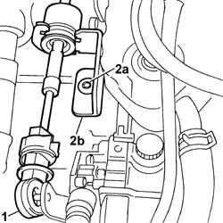
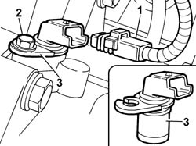

5510C36 RPM SENSOR - R.R.
- Path
- Procedures > 55 ELECTRICAL EQUIPMENT > 5510 ENGINE IGNITION > 5510C COIL, ECU, SENSORS > 5510C36 RPM SENSOR - R.R.
- Kind
- repair procedure (removal / refitting; the operation number is the code)
- Applies to
- engines: 3.0 24V V6; all production periods
- Interactive page
- https://sloeber94.github.io/elrnDB-fUlss/en/#/179007542
Applies to: engines: 3.0 24V V6; all production periods
 Removing
Removing
 Refitting
Refitting- Disconnect the negative battery terminal.
Description | Connector | |
|---|---|---|
. | Battery | A001B |
Op. 5010B18 CLIMATE CONTROL UNIT AIR INTAKE - R.R.
Op. 1048A47 SLEEVE FROM RIGID PIPE TO THROTTLE BODY - R R
1. Undo the fixing bolt (1a) and remove the mounting collar (1b)
2. Move the wiring to free up the work area.
3. Disconnect the electrical connection from the engine coolant temperature sensor.
Description | Connector | |
|---|---|---|
3 | Engine coolant temperature sensor/sender unit | K036 |

Applies to: engines: 3.0 24V V6; all production periods
1. Release the end of the bowden cable from the gear selector lever.
2. Undo the fixing bolts (2a) and move the mounting bracket (2b) complete with bowden cable.

Applies to: engines: 3.0 24V V6; all production periods
1. Disconnect the electrical connection from the engine rpm and top dead centre sensor located on the bellhousing.
Description | Connector | |
|---|---|---|
1 | Rpm sensor | K046 |
2. Loosen the sensor fixing bolt without undoing it.
3. Rotate the engine rpm and top dead centre sensor complete with plate in an anti-clockwise direction and remove it from its housing.

Applies to: engines: 3.0 24V V6; all production periods
Refitting
Removing- Position the engine rpm and top dead centre sensor in its housing, rotate it in a clockwise direction to attach the plate and tighten the fixing bolt.
- Connect the electrical connection to the engine rpm and top dead centre sensor.
Description | Connector | |
|---|---|---|
. | Rpm sensor | K046 |
- Position the mounting bracket complete with bowden cable and tighten the fixing bolts.
- Fit the end of the bowden cable on the gear selector lever spherical head
- Release the gear selector lever.
- Connect the electrical connection to the engine coolant temperature sensor.
Description | Connector | |
|---|---|---|
. | Engine coolant temperature sensor/sender unit | K036 |
- Position the wiring and tighten the bolt fixing the mounting collar.
Op. 1048A47 SLEEVE FROM RIGID PIPE TO THROTTLE BODY - R R
Op. 5010B18 CLIMATE CONTROL UNIT AIR INTAKE - R.R.
- Connect the negative battery terminal.
Description | Connector | |
|---|---|---|
. | Battery | A001B |